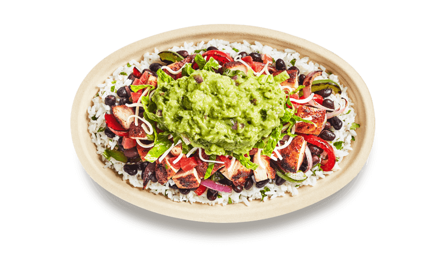

Gong cha
Gong cha's success in Taiwan launched our stores all over the globe with customers loving our premium quality tea, products & services:
- Fresh Tea brewed throughout the day
- Pearls (bubbles) freshly prepared to perfection continuously through the day
- Tea sourced from the finest tea estates in Taiwan
- Strict quality controls for all ingredients
Distance from Petty: 0.2 miles
Chick-fil-A
If you're craving a delicious chicken sandwich with a side of crispy waffle fries, Chick-fil-A is the place to be! Known for its friendly service and high-quality ingredients, this popular spot offers a variety of tasty meals, from classic chicken sandwiches to refreshing lemonade.
- Entrees for a sandwich, a side, and a drink
- Chick-fil-A Chicken Sandwich
- Chick-fil-A Waffle Potato Fries

Distance from Petty: 0.2 miles
Chipotle
Craving a fresh and flavorful meal? Chipotle has you covered! With customizable burritos, bowls, tacos, and salads, you can build your perfect meal using high-quality ingredients and bold flavors. Whether you're in the mood for spicy barbacoa or classic chicken, there's something for everyone!
- Customizable burritos, bowls, tacos, and salads
- Braised Beef Barbacoa
- Chipotle Chicken

Distance from Petty: 0.3 miles